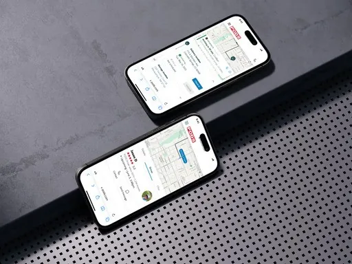
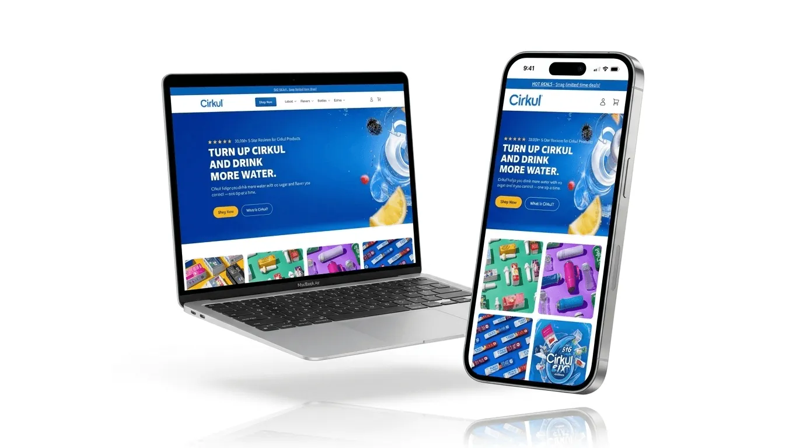
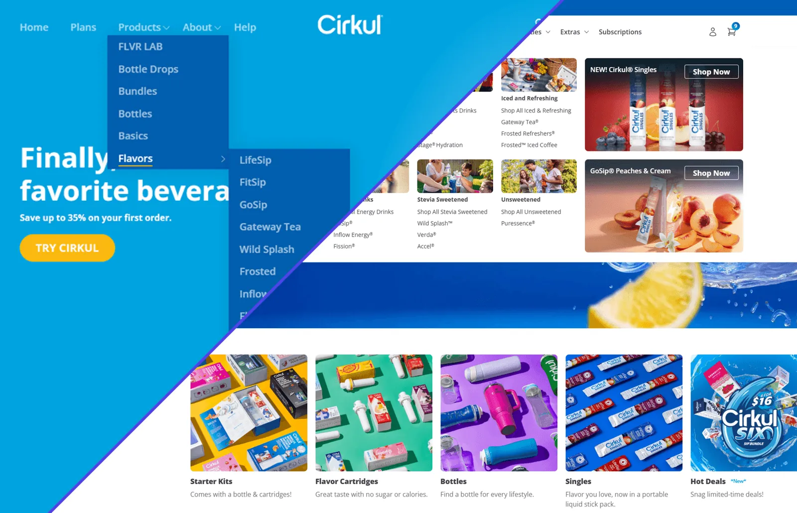
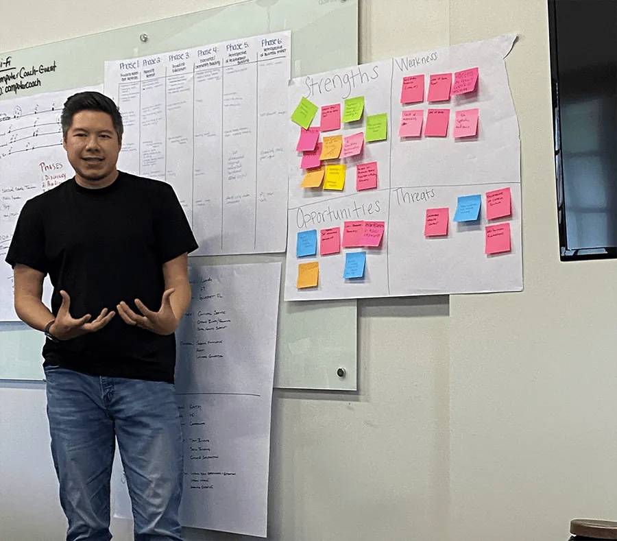

Systems that scale. Storefronts that sell.
I'm Andrew, a senior UX designer. I built the design system three PODS product areas share, and led the Cirkul homepage and shopping redesign behind $90M+ in revenue.

012026 Pre‑Quote Strategy Data‑led A decision framework built from data and user insights Shipped2026Built ondata + user insights 022025
PODS Design System
0→1
Pattern library to a governed, scalable product language
Shipped2025Scopecomponents, layout & interaction patterns
022025
PODS Design System
0→1
Pattern library to a governed, scalable product language
Shipped2025Scopecomponents, layout & interaction patterns

032024 Cirkul Homepage $90M+ Revenue the homepage & shopping redesign contributed to 2M+products sold37M+sessions
04External ↗ Nav Redesign (opens andrewarquines.com in a new tab) +11% First‑click success after rebuilding the IA & navigation Shipped2025FocusIA & navigation- PODS
- Cirkul
- SKILLZ
- Cirkul × MrBeast launch
- Design Systems
- E‑commerce
- WCAG Accessibility
(01) Selected work
Work that ships, and moves the numbers.
A curated selection of projects that reflect my commitment to simplicity and purposeful design.
-
01Shipped2026
Pre‑Quote Strategy
A decision framework built from data and user insights, giving teams a shared way to decide what goes in front of customers before they ever get a quote.
- Strategy
- Research
- Data
-
02Shipped2025
PODS Design System
From a loose pattern library to a governed product language: reusable components, layout guidance and interaction patterns that cut implementation ambiguity across teams.
- Design systems
- Governance
- Components
-
03Shipped2024
Cirkul Homepage
A homepage and shopping redesign that contributed to $90M+ in revenue and 2M+ products sold across 37M+ sessions.
$90M revenue
Read case study -
04Shipped2025
Nav Redesign
Information architecture and navigation rebuilt around how people actually look for things, validated with first‑click testing.
+11% first‑click success
See it on andrewarquines.com (opens in a new tab)
(02) Testimonials
Kind words from great people.
5/5 average rating
100+ happy clients worldwide
Andrew's one of those rare designers who gets both UX flow and UI detail: meticulous, strategic, and never superficial. He asks sharp questions, works clean, and delivers work that lasts. The email system he built continues to drive results. I would work with him again in a heartbeat.
Andrew has been a massive contribution to the team. He's done a phenomenal job coming in, providing design structure. The design team, and I mean this deeply, would not be where it is today without all of his hard effort and work and structure.
He is a true leader and talks to anyone, whether an intern or the CBO, with respect and kindness. At Cirkul, his influence was everywhere, from email templatization to website interface, and even WCAG standards for digital accessibility.
Andrew is incredibly knowledgeable and approaches each project with a thorough understanding of the audience, the goals, and the desired outcomes, always backed by research and a clear point of view.
Andrew's well‑organized and methodical approach ensured all design projects were completed to a high standard, and his attention to detail was exemplary. He would be a great asset to any design team.
Not only is he talented, but his expertise in UX and his professional, leader approach to different challenges has left a mark here and on everyone who had the pleasure to work with him.
(03) About me
About Andrew
I'm a designer focused on simple, purposeful, and elegant solutions. Beyond design I'm a dad, husband, son, adventurer, gamer, and collector of experiences.
From road trips across America's National Parks to trekking through Iceland, backpacking through Norway, and eating my way through Japan 🍣, I bring a world of experiences to the table.
Four rules I design by
- Clarity. Every element and label says exactly what it does.
- Simplicity. Find what works and keep the noise low.
- Human. It should work for people from start to end.
- Informed. Data settles it, not opinions.
(04) How I work
Shown in the work, not a diagram.

-
01
Decide who owns what, before drawing anything.
At PODS, four design teams had inherited 800+ colors and their own rules. I started the design system with ownership, not components.
PODS Design System -
02
Make the handoff shorter.
Hour‑long handoff walkthroughs became 15–20 minute implementation conversations once the system was in place.
See the outcome -
03
Let behavior settle the argument.
For Pre‑Quote, I mapped where quote intent actually lives, then built a decision framework from data and what customers told us.
Pre‑Quote Strategy -
04
Test the structure, then ship it.
A navigation rebuilt around how people actually look for things, validated with first‑click testing: +11% first‑click success.
Nav Redesign (opens in a new tab)
(05) Experience
Leaving an impact.
I've had the delight of working with, leading, and mentoring some amazing people while improving the metrics that matter.
-
PODSSenior UX Designer2025–2026
Defined reusable components, layout guidance, and interaction patterns for the PODS design system, improving consistency across design teams.
-
CirkulLead UX Designer2023–2025
Led UX for the homepage and shopping experience, built the email template system, and brought WCAG accessibility standards to the site.
-
SKILLZUX Designer2018–2023
Redesigned core information architecture, user flows, and product experiences, simplifying complex surfaces and improving usability.
-
FreelanceProduct Designer2018–now
Partnering with product and business teams on feature prioritization, UX strategy, and customer journey improvements across verticals.